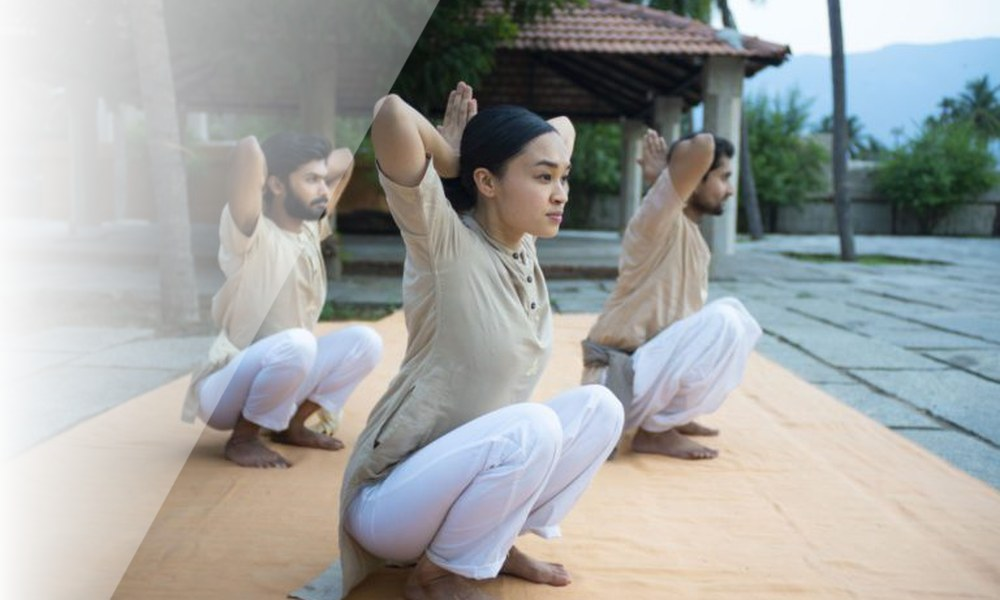

Auf einen Blick
| Was es ist | Eine Sieben-Schritte-Dynamikpraxis zur Aktivierung und Stärkung der Wirbelsäule |
| Der Name | Yoga Namaskar — eine Verbeugung im Yoga, verschieden von der zwölfposturigen Surya Namaskar |
| Zeit | Ein paar Minuten pro Sitzung |
| Kosten | Kostenlos in der Sadhguru App; tiefere Angebote über Programme |
| Voraussetzungen | Keine — zugänglich auf jedem Fitnessniveau |
| Charakter | Strukturell, erdend, emotional lösend |
Für wen es am besten ist
- Alle unter tiefem emotionalem Stress — Sadhguru empfiehlt ausdrücklich den Ansatz der Wirbelsäulenaktivierung dafür
- Menschen, die den ganzen Tag sitzen — die Gegenpraxis für eine komprimierte, unbewegliche Wirbelsäule
- Alle, die ihre Wirbelsäule langfristig pflegen — das System intakt halten, während man älter wird
- Praktizierende jeden Alters — keine Ausrüstung, keine Flexibilitätsanforderungen, kostenlos in der App
Ansehen
Mehr auf der offiziellen Yoga-for-Wellbeing-Seite (englisch).
In der Tiefe — für Neugierige
Nicht nur eine Übung
Die Wirbelsäule ist nicht bloß eine Ansammlung von Knochen. Wie Sadhguru in Karma lehrt, ist sie die Grundlage von Kommunikation und Wahrnehmung im menschlichen System. Jede Lebenserfahrung, die du je hattest, wurde durch deine Wirbelsäule geleitet — darum wird ihre optimale Pflege nicht nur den Körper beleben, sondern einen enormen Unterschied in deinem mentalen und emotionalen Leben machen.
„Die Wirbelsäule ist nicht bloß eine Ansammlung von Knochen. Sie ist die Grundlage von Kommunikation und Wahrnehmung im menschlichen System. Ihre Pflege belebt nicht nur den Körper — sie macht einen enormen Unterschied in deinem mentalen und emotionalen Leben und in der Art, wie du funktionierst.“
Die Praxis arbeitet mit einem zentralen Mechanismus: Die Streckung der Wirbelsäule, besonders der Lendenregion, hat tiefgreifende Wirkung auf das psychische Wohlbefinden. Das ist die ganze Logik — eine gestreckte, entspannte Wirbelsäule ist keine rein körperliche Angelegenheit; sie ist ein direkter Hebel dafür, wie du dich fühlst und funktionierst.
Was sie bewirkt
Yoga Namaskar aktiviert und stärkt die Wirbelsäule und die Muskeln entlang derselben — damit das System im Alter nicht kollabiert und die Nerven nicht eingeklemmt werden. Bei bestehenden Wirbelsäulenschäden ist es ein guter Weg zur Regeneration mit ganzheitlichem Nutzen für den ganzen Körper.
Ihre markanteste Anwendung ist aber die emotionale: Die Praxis wird als wissenschaftlicher Ansatz beschrieben, emotionale Blockaden im menschlichen System zu lösen — und fördert, was die klassischen Texte chitta vritti nirodha nennen: die Befreiung des Bewusstseins von Fluktuationen und Stauungen.
Sieben Schritte, ein paar Minuten, keine Ausrüstung — und anders als die zwölf Posturen des Surya Namaskar führen die sieben Bewegungen die Wirbelsäule durch ihren vollen Bewegungsumfang in einer Form, die jeder ausführen kann.
Quellen
Quellen: Offizielle Isha-Foundation-Seite „Yoga for Wellbeing“; Sadhguru, Karma: A Yogi’s Guide to Crafting Your Destiny (Kapitel 8); Sadhguru, Inner Engineering.